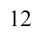

Территориальная программа гос. гарантий оказаний гражданам бесплатной медицинской помощи на 2020
УТВЕРЖДЕНА постановлением Правительства Новосибирской области от 29.12.2022 № 651-п
ТЕРРИТОРИАЛЬНАЯ ПРОГРАММА
государственных гарантий бесплатного оказания гражданам
медицинской помощи в Новосибирской области на 2023 год
и на плановый период 2024 и 2025 годов
XI. Сроки ожидания медицинской помощи, оказываемой в плановой форме, в том числе сроки ожидания оказания медицинской помощи в стационарных условиях, проведения отдельных диагностических обследований и консультаций врачей-специалистов, первичной медико-санитарной помощи в неотложной форме, скорой медицинской помощи в экстренной форме
Сроки ожидания приема врачами-терапевтами участковыми, врачами общей практики (семейными врачами), врачами-педиатрами участковыми не должны превышать 24 часов с момента обращения пациента в медицинскую организацию.
Сроки ожидания оказания первичной медико-санитарной помощи в неотложной форме не должны превышать 2 (двух) часов с момента обращения пациента в медицинскую организацию.
Сроки проведения консультаций врачей-специалистов (за исключением подозрения на онкологическое заболевание) не должны превышать 14 рабочих дней со дня обращения пациента в медицинскую организацию.
Сроки проведения консультаций врачей-специалистов в случае подозрения на онкологическое заболевание со дня обращения пациента в медицинскую организацию не должны превышать 3 (трех) рабочих дней.
Сроки проведения диагностических инструментальных (рентгенографические исследования, включая маммографию, функциональная диагностика, ультразвуковые исследования) и лабораторных исследований при оказании первичной медико-санитарной помощи, не должны превышать 14 рабочих дней со дня назначения исследований (за исключением подозрения на онкологическое заболевание).
Сроки проведения компьютерной томографии (включая однофотонную эмиссионную компьютерную томографию), магнитно-резонансной томографии и ангиографии при оказании первичной медико-санитарной помощи (за исключением подозрения на онкологическое заболевание) не должны превышать 14 рабочих дней со дня назначения исследований.
Сроки проведения диагностических инструментальных и лабораторных исследований в случае подозрения на онкологическое заболевание не должны превышать 7 (семь) рабочих дней со дня назначения исследований.
Срок установления диспансерного наблюдения врача-онколога за пациентом с выявленным онкологическим заболеванием не должен превышать 3 (трех) рабочих дней с момента постановки диагноза онкологического заболевания.
Сроки ожидания оказания специализированной (за исключением высокотехнологичной) медицинской помощи, в том числе для лиц, находящихся в стационарных организациях социального обслуживания, не должны превышать 14 рабочих дней со дня выдачи лечащим врачом направления на госпитализацию, а для пациентов с онкологическими заболеваниями - не должны превышать 7 (семь) рабочих дней с момента гистологической верификации опухоли или с момента установления предварительного диагноза заболевания (состояния).
Время доезда до пациента бригад скорой медицинской помощи при оказании скорой медицинской помощи в экстренной форме не должно превышать 20 минут с момента ее вызова, за исключением населенных пунктов, находящихся в транспортной доступности свыше 20 минут, перечень которых определяется областным исполнительным органом государственной власти Новосибирской области, уполномоченным в сфере охраны здоровья.
При выявлении злокачественного новообразования лечащий врач направляет пациента в специализированную медицинскую организацию (специализированное структурное подразделение медицинской организации), имеющую лицензию на осуществление медицинской деятельности с указанием работ (услуг) по онкологии, для оказания специализированной медицинской помощи в сроки, установленные настоящим разделом.
В медицинских организациях, оказывающих специализированную медицинскую помощь в стационарных условиях, ведется лист ожидания специализированной медицинской помощи, оказываемой в плановой форме, и осуществляется информирование граждан в доступной форме, в том числе с использованием информационно - телекоммуникационной сети «Интернет», о сроках ожидания оказания специализированной медицинской помощи с учетом требований законодательства Российской Федерации в области персональных данных.
